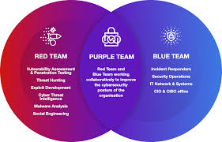

Hi, my name is Scott Krager. I am really excited that you found my page.
I'm not formerly trained as a coder or developer but took it upon myself to learn.
The process has been really fun using HTML and CSS to create a professional page.
I used my reasoning and problem solving to think about changes and troubleshoot
issues that came up along the way.

Professionally, I am transitioning into cybersecurity and have loved learning a ton of tools and
processes within the industry. This page highlights some of what I have done but does
not highlight my ability to retain the information. I have a great passion for learning
and have prided myself on committing all studies to memory.

Personally, I am married to my supportive wife, Lauren, and together have three children: a daughter, Evie, and twins, Juliette and Smith. I am originally from Indiana and have resided in Illinois for the last 8 years.